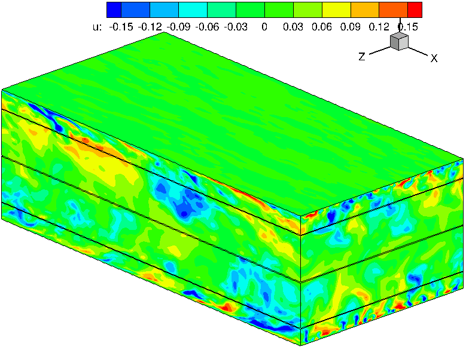
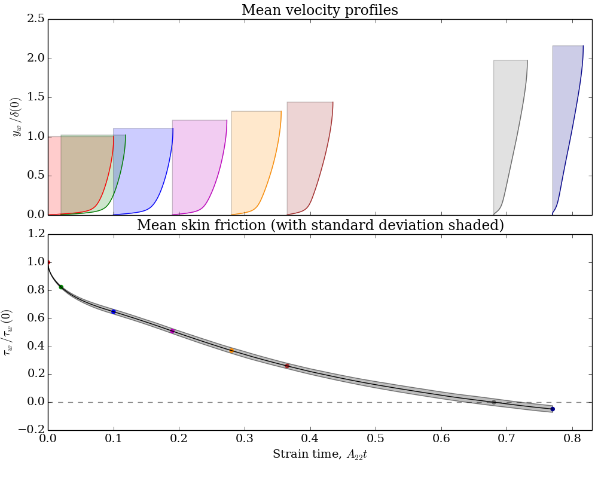

|
Langley Research CenterTurbulence Modeling Resource |
DNS: High-Order Moments in Unstrained and Strained Channel Flow
Return to: Data from DNS - Intro Page
Return to: Turbulence Modeling Resource Home PageThe data on this page were provided by E. Jeyapaul and G. Coleman.
This DNS was conducted to extract all
terms in the budgets for higher (3rd and 4th) order
moments for both unstrained and strained turbulent channel flow.
The strained flow was in adverse-pressure gradient (APG). Data are included for the unstrained
case as well as at 7 different times in the strained flow's evolution.
The nominal Retau of the flow to which the strain is applied was approximately 392
(based on friction velocity and channel half-width),
the bulk Re (based on bulk mixed-mean velocity and full channel width) was approximately 13750, and the initial
Reynolds number (based on centerline velocity and channel half-width) was approximately 7910.
The flow was computed on a grid with over 21 million grid points
(384 x 193 x 288, or 256 x 193 x 192 spectral modes)
using the incompressible Navier-Stokes equations in a pseudo-spectral code.
For the unstrained case, the grid spacings corresponded to approximately
Delta x+=10 and
Delta z+=6.5.
The minimum y-spacing (adjacent to the wall) corresponded to Delta y+=0.1,
The data were averaged over 159 statistically independent realizations.
For the strained APG flow,
uniform irrotational temporal deformations were applied to the flow
domain of a conventional direct numerical simulation channel code. The velocity
difference between the inner and outer layer was also controlled by accelerating the
walls in the streamwise plane, in order to duplicate the defining features of both the
inner and outer regions of an APG boundary layer.
A relatively weak APG was specified, with uniform strain magnitude (deceleration in
streamwise direction and divergence in wall-normal direction) set to 31% of the
ratio of the initial friction velocity to the initial channel half-width.
Initial channel size was 2*pi*delta by 2*delta by pi*delta (where delta is the channel half-width).
Additional details concerning the data,
code, and computational methodology can be found in:


The data files include:
The DNS data files are provided below (updated 7/29/2014):
PDF of the fluctuation velocity at three different strain times are
given here:
Equations and an explanation of the terms in the data files are given here:
Return to: Data from DNS - Intro Page
Recent significant updates: Responsible NASA Official:
Ethan Vogel
7/29/2014 - updated all DNS files (fixed bug in rms_p); explanation of all changes given in explanation_of_terms.txt
6/11/2014 - updated all DNS files, nondimensionalized now by u_tau(0) rather than Uref=26.330*utau(0); added PDF data
5/19/2014 - updated Retau value to be more precise; made minor addition to explanation_of_terms.txt
Page Curator:
Clark Pederson
Last Updated: 11/05/2021